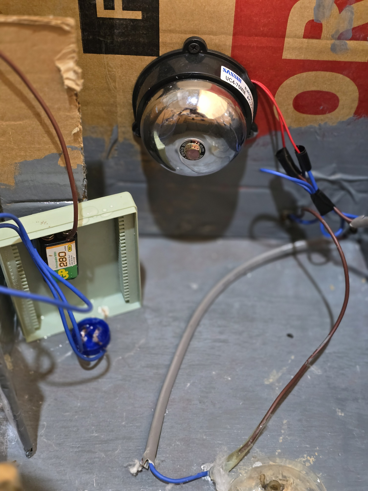
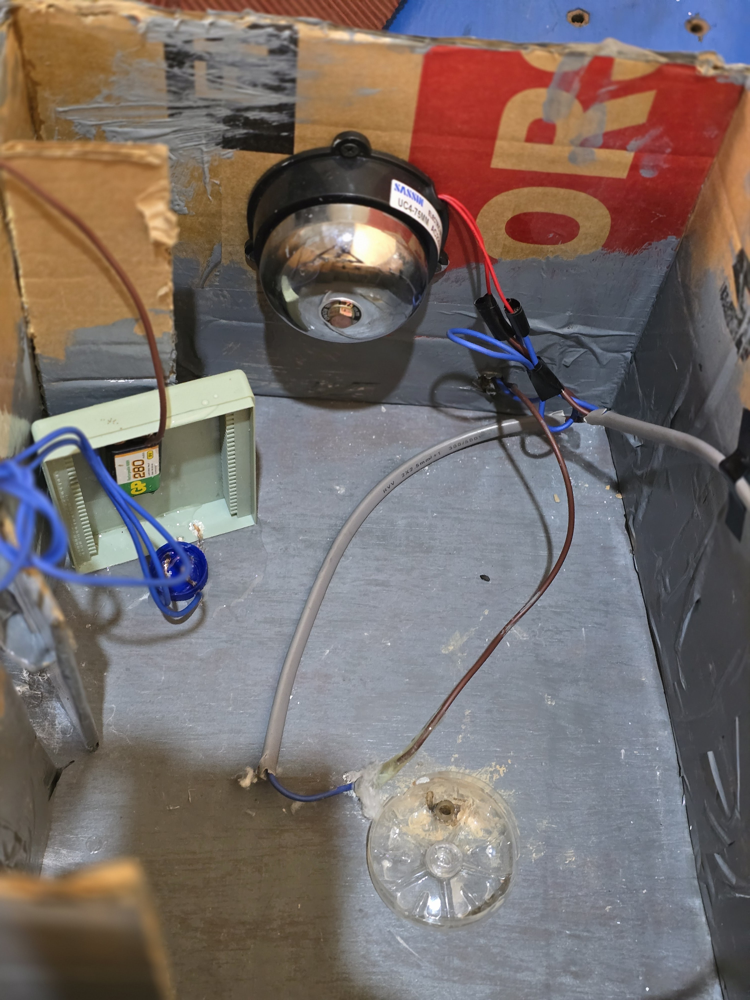
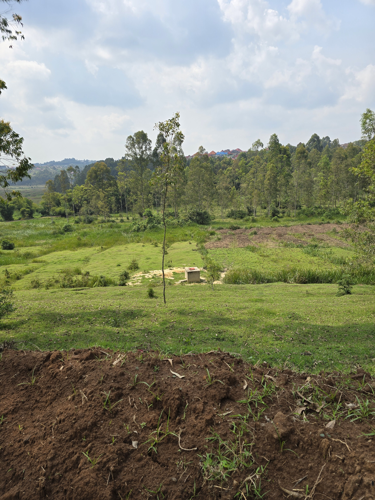

About Flood Detector
Our Features and How We Work
At Flood Detector, we offer a comprehensive suite of features designed to provide real-time flood monitoring and early warning systems. Our key features include:
- Real-Time Alerts: Receive instant notifications on your phone when flood risks are high in your area, allowing you to take immediate action.
- Accurate Mapping: View detailed flood maps to understand the potential impact on your community and plan accordingly.
- Community-Powered: Contribute to and receive data from a network of community-based sensors, creating a collaborative environment for better protection.
- Data Analytics: Utilize historical data and predictive analysis to help you prepare for future floods and make informed decisions.
How We Work: Our system operates through a network of sensors placed in flood-prone areas. These sensors collect real-time data on water levels, rainfall, and other environmental factors. The data is processed using advanced analytics to predict flood risks. When a potential flood is detected, automated alerts are sent to registered users via SMS, mobile apps, or web notifications. Authorities can also access detailed maps and reports to coordinate response efforts. This integrated approach ensures communities are empowered with timely information to mitigate flood damage.
Our Mission
Our mission is to leverage technology to protect communities from the devastating impact of floods. We believe that by providing accessible, real-time information, we can empower individuals and authorities to make informed decisions that save lives and property.
Our Vision
We envision a world where every community vulnerable to flooding has access to an effective early warning system. We are committed to developing and deploying innovative and affordable solutions that are tailored to the unique needs of each community we serve.
How it works

NSHIMIYUMUKIZA Vedaste
Project Manager

ISHIMWE Joyeux Pierre
IT Specialist

NSHIMIYUMUKIZA Vedaste
Project Manager

NSHIMIYUMUKIZA Vedaste
Project Manager

NSHIMIYUMUKIZA Vedaste
Project Manager

NSHIMIYUMUKIZA Vedaste
Project Manager

NSHIMIYUMUKIZA Vedaste
Project Manager

NSHIMIYUMUKIZA Vedaste
Project Manager